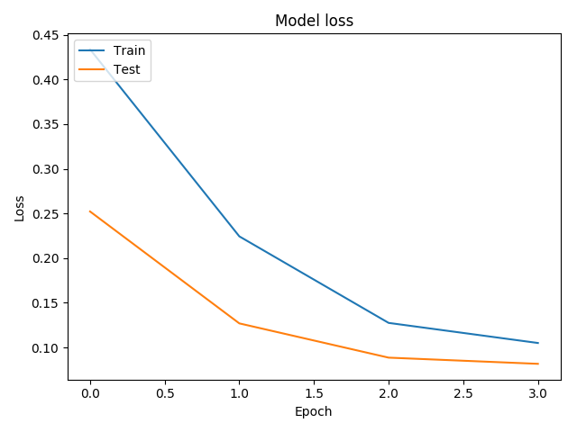
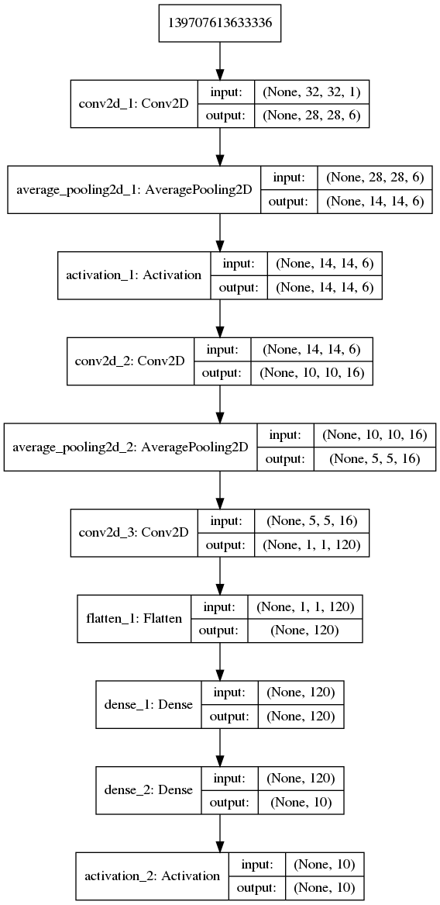

LeNet-5
深度学习
过几天要考试了/(ㄒoㄒ)/~~
还要复习真的不爽.本来两周就可以把Ng的DL课程撸完,想到明天要交矩阵论作业,今天就去写矩阵作业去了,写了两个小时就不想写了(都不会2333
然后回来撸波代码,用keras写了个LeNet-5网络.
代码
我是TensorFlow 1.12,只要装上Keras和Tensorflow就可以运行我这个代码.
我这里其他的应该都和原版一样,就是最后的全连接输出层,原版用的是高斯核也就是径向基核,但是我一时没有找到,就用了softmax输出.并且这个网络多训练几次,是可以达到99%正确率的,但是我懒得跑了,我写这个主要以熟悉API为目的 2333
import keras as k
import matplotlib.pyplot as plt
import numpy as np
from keras.callbacks import TensorBoard
def expand(x: np.ndarray):
'''扩展矩阵 4个像素 都为0'''
return np.pad(x, ((0, 0), (2, 2), (2, 2)), mode='constant')
if __name__ == "__main__":
# 读取数据
(x_train, y_train), (x_test, y_test) = k.datasets.mnist.load_data()
# 扩充矩阵
x_train = expand(x_train)
x_test = expand(x_test) # [28,28] -> [32,32]
# 增加通道数 为了卷积匹配
x_train = np.reshape(x_train, np.append(np.array(x_train.shape), 1))
x_test = np.reshape(x_test, np.append(np.array(x_test.shape), 1))
# one hot 编码
y_train = k.utils.to_categorical(y_train, num_classes=10)
y_test = k.utils.to_categorical(y_test, num_classes=10)
# 归一化
x_train = x_train / 255.0
x_test = x_test / 255.0
# 绘图
# plt.imshow(x_train[0])
# plt.show()
# 创建模型
mod = k.models.Sequential(name='leNet-5')
'''C1层是一个卷积层输入图片：32*32
卷积核大小：5*5
卷积核种类：6
输出featuremap大小：28*28 （32-5+1）
神经元数量：28*28*6
连接数：（5*5+1）*6*28*28'''
mod.add(k.layers.Convolution2D(filters=6, kernel_size=(5, 5), kernel_initializer=k.initializers.he_normal(1)))
'''
S2层是一个下采样层
输入：28*28
采样区域：2*2
采样方式：4个输入相加，乘以一个可训练参数，再加上一个可训练偏置。结果通过sigmoid
采样种类：6
输出featureMap大小：14*14（28/2）
神经元数量：14*14*6
'''
mod.add(k.layers.AveragePooling2D(pool_size=(2, 2)))
mod.add(k.layers.Activation('sigmoid'))
'''
C3层也是一个卷积层
输入：S2中所有6个或者几个特征map组合
卷积核大小：5*5
卷积核种类：16
输出featureMap大小：10*10 (14-5+1)
'''
mod.add(k.layers.Conv2D(filters=16, kernel_size=(5, 5), kernel_initializer=k.initializers.he_normal(2)))
'''
S4层是一个下采样层
输入：10*10
采样区域：2*2
采样种类：16
输出featureMap大小：5*5（10/2）
神经元数量：5*5*16=400
'''
mod.add(k.layers.AveragePooling2D(pool_size=(2, 2)))
'''
C5层是一个卷积层
输入：S4层的全部16个单元特征map（与s4全相连）
卷积核大小：5*5
卷积核种类：120
输出featureMap大小：1*1（5-5+1）
'''
mod.add(k.layers.Conv2D(filters=120, kernel_size=(5, 5), kernel_initializer=k.initializers.he_normal(3)))
'''
F6层全连接层
输入：c5 120维向量
激活函数:sigmoid
'''
mod.add(k.layers.Flatten())
mod.add(k.layers.Dense(120))
mod.add(k.layers.Dense(10))
mod.add(k.layers.Activation('softmax'))
mod.compile(optimizer=k.optimizers.adam(),
loss='categorical_crossentropy',
metrics=['accuracy'])
# 训练模型
his = mod.fit(x=x_train, y=y_train,
batch_size=32,
epochs=4,
validation_split=0.1,
callbacks=[TensorBoard(log_dir='./log_dir')])
'''可视化训练结果 (为什么验证集准确率比训练集还高?'''
# 绘制验证集,测试集准确率曲线
plt.plot(his.history['acc'])
plt.plot(his.history['val_acc'])
plt.title('Model accuracy')
plt.ylabel('Accuracy')
plt.xlabel('Epoch')
plt.legend(['Train', 'Test'], loc='upper left')
plt.show()
# 绘制验证集,训练集 误差曲线
plt.plot(his.history['loss'])
plt.plot(his.history['val_loss'])
plt.title('Model loss')
plt.ylabel('Loss')
plt.xlabel('Epoch')
plt.legend(['Train', 'Test'], loc='upper left')
plt.show()
'''评估测试集'''
evahis = mod.evaluate(x=x_test, y=y_test)
print('测试集准确率为{:.3f}%'.format(evahis[1] * 100))
'''显示模型'''
k.utils.plot_model(mod, show_shapes=True)运行结果
输出
32/10000 [..............................] - ETA: 0s
1952/10000 [====>.........................] - ETA: 0s
3776/10000 [==========>...................] - ETA: 0s
5760/10000 [================>.............] - ETA: 0s
7872/10000 [======================>.......] - ETA: 0s
9984/10000 [============================>.] - ETA: 0s
10000/10000 [==============================] - 0s 26us/step
测试集准确率为97.450%图像


